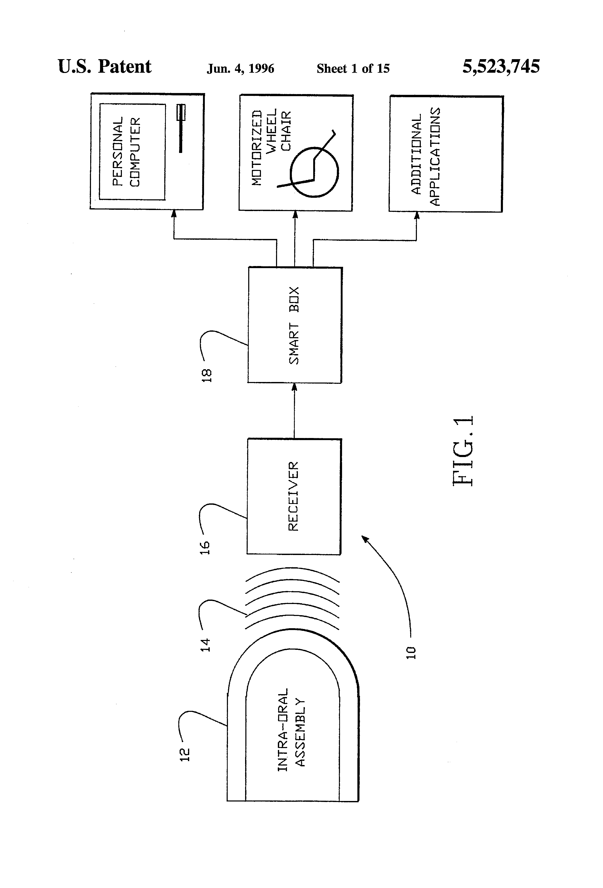
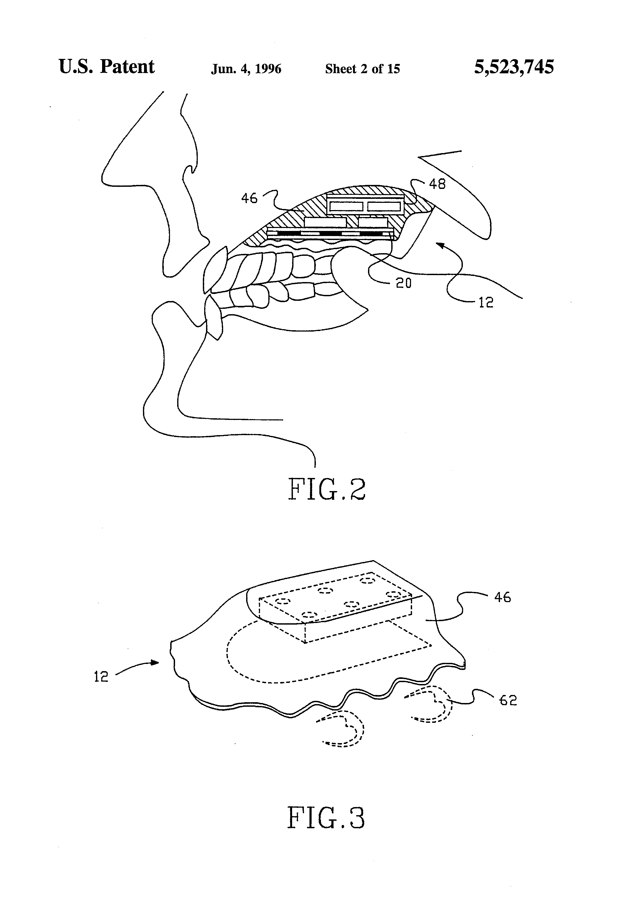

The Keyboard You Held in Your Mouth
In 1991, a nine-key membrane keypad sealed inside a dental retainer turned the tongue into a full input organ — and then the company went bankrupt, and the people who typed with their mouths lost their voices again.
Every input device in this museum begins with an assumption so obvious it disappears: that a person has hands, and that the hands will do the work. Keys assume fingers. Mice assume a wrist. Even the strangest controllers reassign a limb — you fly with your feet, you punch, you wear a sensor on your head. The Tongue Touch Keypad does not. It begins with a body that cannot press a key, and asks whether the computer could meet that body somewhere the spinal cord never touches.
The answer it found was the roof of the mouth.

In 1991 the FDA cleared the "TongueTouch Keypad and Zofcom Control System" as a Class II powered environmental control device. The hardware was a custom-fitted acrylic retainer, molded against the palate like an orthodontic appliance, with a nine-key membrane keypad built into its surface. You operated it with the tip of your tongue, touching one position at a time. An encoder chip turned each press into a binary code, and a low-power coil wound around the retainer's edge broadcast it out through the tissues of the head on a magnetic field at roughly two megahertz. A receiver near the head handed the code to the Smartlink Controller, which decided what the keystroke meant: a letter, a phrase, a cursor direction, or a command to the television, the telephone, the VCR, the page-turner, the powered wheelchair.
That is the whole interface. No screen on the device, no menu, no mode light. A keyboard you cannot see, held against a surface you cannot see, worked by a muscle most of us never think of as a pointing finger.

Why the tongue
The Thomas Jefferson University engineers who first put an intraoral switch on a dental appliance made a deadpan anatomical observation that reads, in retrospect, like a design principle: in quadriplegia the tongue is usually spared. It is wired through the cranial nerves, not the spinal cord, so an injury that silences every limb can leave it fully under command. The mouth became a piece of territory the body never lost.
Zofcom took that single switch and scaled it into a keyboard — treating the tongue not as one button but as a multi-channel input organ. The tongue earns the job: it rivals the fingertips in tactile sensitivity and fine spatial control, and it is warm and self-lubricating enough to slide across a membrane all day without wearing out. A delay circuit required sustained contact before a press registered, so a resting tongue did not type by accident. Users reportedly reached text-entry rates better than other computer-access devices available to disabled people at the time.
The invisibility was the design
But the part I cannot stop thinking about is social, not electrical. The device was, in its own documentation, "essentially invisible when worn." A head pointer, a mouth stick, an array of external switches — every other hands-free device announces the user's disability to the room. The retainer did not; it was hidden behind the teeth. For the teenagers it was built for, that invisibility was not cosmetic. It was the difference between using a computer and letting one mark you as different in front of everyone.
This is the inverse of almost everything else in the museum's input story. The Space-Cadet keyboard and the Aesthedes desk and the chorded keyboards all ask the user to display expertise, to make the body's competence visible. The Tongue Touch Keypad asked the machine to disappear into the user instead. The interface went inside.
What the record actually says
Here the Field Note has to stop being a story and start being a warning. The Tongue Touch Keypad was not a commercial success. Roughly seventy people ever received one. The successor company went bankrupt, and the downside was not a discontinued product line — it was that specific people lost the only voice they had. One young man who had typed with his tongue for more than twenty-five years was reduced, for three full years, to sticking his tongue out for "yes" and closing his mouth for "no," until a volunteer — a game designer, working from a ninety-nine-cent Halloween mask and a scrap of metal contact — built him a replacement by hand.
That is the sentence I want to leave on the page. Every niche assistive device is a bet that a small company can sustain a specialized interaction for the lifespan of the people who need it. When the bet fails, the failure is not abstract. The museum is full of prototypes that vanished politely because nobody wanted them. This one vanished impolitely, because eighty-odd people very badly did.
The lineage it opened
The idea survived its makers. The Georgia Tech Tongue Drive System replaced the membrane with a magnetic tracer and Hall-effect sensors on a headset; later MIT work returned to the palatal retainer but added a touch surface and motion sensing. Those papers name Zofcom's nine-key retainer as the ancestor — the first device to establish the paradigm of an intraoral, wireless, multi-channel tongue interface.
The museum keeps it because it is the purest case of an input channel found nowhere else in the collection: no hands, no feet, no eyes, no voice. Just the tongue, the palate, and a machine willing to be met halfway inside a body that had been told the rest of it was unavailable. A keyboard you held in your mouth, and could never show anyone — which, for a while, was exactly the point.